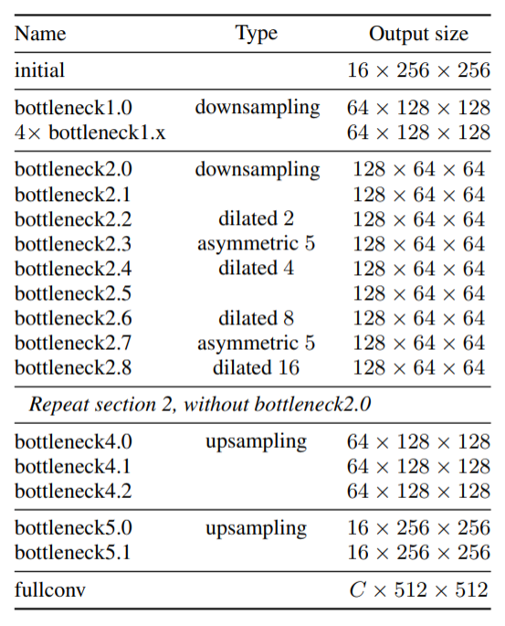
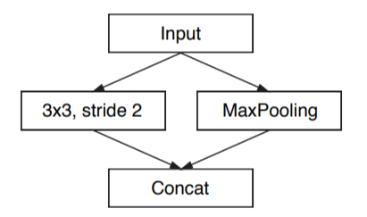
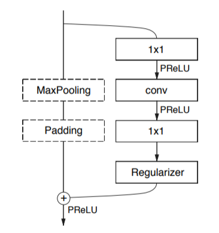
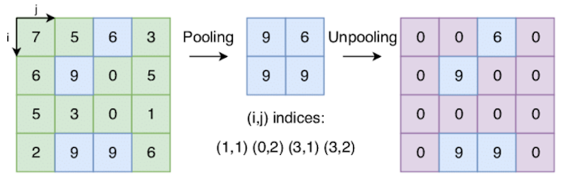

ENet
Table of Contents
1 ENet
https://arxiv.org/pdf/1606.02147.pdf 2016/06
https://github.com/TimoSaemann/ENet
ENet 是一个注重推理速度的 semantic segmentation 模型
ENet 做为一个 semantic segmentation 模型, 基本就是一个标准的 encoder-decoder 结 构, 并且参考了 ResNet 和 Inception 的设计
1.1 Network

假设网络的输入为 512x512.
1.1.1 initial

输入数据为 (3, 512, 512), 通过 initial 层后变为 (16, 256, 256), 这里没有直接做 pooling 而是参考了 inception 的 Efficient Grid Size Reduction
1.1.2 bottleneck

bottleneck 类似于 resnet 的 bottleneck 结构, 做了一点修改:
bottleneck 可以有不同的 type:
downsampling
bottleneck 第一个 1x1 conv2 变成 2x2, stride=2, 且左边分支加上一个 maxpooling, 用来做一个 2x 的 downsample, 这种结构和 initial 的并行 pooling 结 构类似
dilated
bottleneck 中间的 conv 变成 Dilated Conv2D
asymmetric
bottleneck 中间的 conv 变成 Asymmetric Conv, 例如 5x5 kernel 变 5x1 和 1x5 两 个kernel, 在保持 receptive field 大小不变的基础上降低了计算量. 参考了 inception
upsampling
和 downsampling 相反: bottleneck 中间的 conv 变成 Deconv2D, 同时左边分支加一 个 max_unpooling
1.2 Upsample
upsamle 主要有四种方法:
- interpolation
- deconv
unpooling
unpooling 是对原值重复或补零,以填充出更多数据, 例如 keras 的 UpSampling2D 就 是通过重复来做 upsample
max unpooling
如果前面是通过 max pooling 做的 downsample, 则后面可以用 max unpooling 做 upsample, 它与普通 unpooling 的区别是它会利用之前做 max pooling 时的索引

Backlinks
Deconv2D (CNN > Deconv2D): Deconv2D 是一种 Upsample 的手段, 被用在大部分 Semantic Segmentation 模型中
Backlinks
Semantic Segmentation (Semantic Segmentation > ENet): ENet